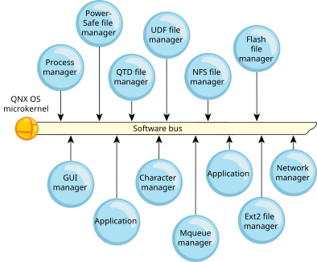

The QNX OS consists of a microkernel (procnto) and various processes. Each process—even a device driver—runs in its own virtual memory space.

The advantage of using virtual memory is that one process can't corrupt another process's memory space. For more information, see The Philosophy of QNX OS in the System Architecture guide.
QNX OS's most important features are its microkernel architecture and the
resource manager framework that takes advantage of it (for a brief
introduction, see
Resource managers
).
Drivers have exactly the same status as other user applications, so you
debug them using the same high-level, source-aware, breakpointing
IDE that you'd use for user applications.
This also means that:
Likewise, in installations in the field, the modularity of QNX OS's components allows for the kind of redundant coverage expressed in our simple, yet very effective, High Availability (HA) manager, making it much easier to construct extremely robust designs than is possible with a more fused approach. People seem naturally attracted to the ease with which functioning devices can be planted in the POSIX pathname space as well.
Developers, system administrators, and users also appreciate QNX OS's adherence to POSIX, the realtime responsiveness that comes from our devotion to short nonpreemptible code paths, and the general robustness of the microkernel.
QNX OS's microkernel architecture lets developers scale the code down to fit in a very constrained embedded system, but QNX OS is powerful enough to use as a desktop OS. QNX OS runs on multiple platforms, including x86_64, and AArch64. It supports symmetric multiprocessing (SMP) and bound multiprocessing (BMP) on multicore systems with up to 64 processors; for more information, see the Multicore Processing chapter of the QNX OS Programmer's Guide.